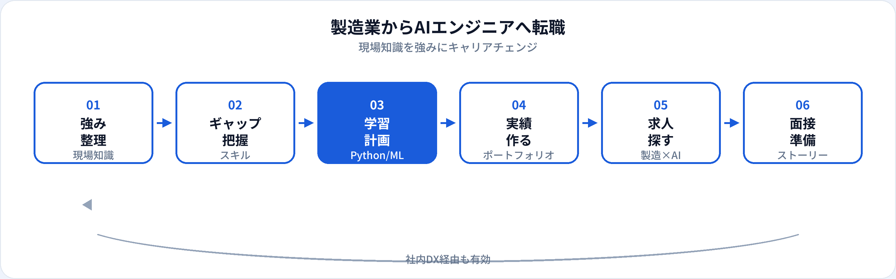

製造業・メーカー勤務の経験者がAIエンジニアを目指すケースは増えています。スマートファクトリー、外観検査、予知保全など、現場を知る人材への需要が高まっているためです。一方で、生産技術・品質管理・保全などの職種からいきなり転職するには、Pythonと機械学習の実装スキルのギャップを埋める必要があります。本記事では、製造業で育つ強み、足りないスキル、転職ルート、求人の探し方、面接での伝え方を2026年6月時点で整理します。製造業全体の資格選びは別記事も参照してください。
製造業経験者がAIエンジニアを目指す理由
製造現場では、不良品の原因追及、設備の突発停止、生産計画の変更など、データに基づく判断が日常業務に含まれます。AI・機械学習は、画像検査の自動化、センサーデータからの異常検知、需要予測など、まさに製造の課題と接続しやすい領域です。
転職市場では、汎用的なMLスキルだけでなく「製造ドメインを理解したエンジニア」が評価される求人が増えています。現場の制約（サイクルタイム、安全規程、ライン停止コスト）を理解していることは、PoC止まりにしない実装力として差別化になります。
製造業で育つ強み
ドメイン知識
工程、品質基準、設備の挙動、トレーサビリティ。AIの課題設定と評価指標を現実的に設計できる。
現場感覚
「精度99%でも運用できない」理由（誤検知のコスト、説明責任）を理解。実務に耐える要件定義に活きる。
部門横断の調整
生産・品質・保全・ITとの調整経験は、AI PM寄りの役割でも強みになる。
改善マインド
カイゼン・PDCAの経験は、モデル改善サイクルやMLOpsの考え方と相性がよい。
足りないスキルとギャップ
前職によって差はありますが、AIエンジニア職でよく求められるのは次の領域です。AIエンジニアの解説もあわせて参照してください。
| スキル領域 | 製造職で不足しがちな点 | 補強の優先度 |
|---|---|---|
| Python | Excel/VBA止まり、プログラミング未経験 | ◎ 最優先 |
| 機械学習基礎 | 統計・評価指標の体系的理解 | ◎ G検定＋実装 |
| 画像・時系列 | 製造AIで頻出だが未経験 | ○ ポートフォリオ題材に |
| クラウド・API | オンプレ・閉域網のみの経験 | ○ 中級以降で |
| Git・チーム開発 | 個人作業中心 | ○ 早期に習慣化 |
学習の全体像
転職ルート（3パターン）
| ルート | 概要 | 向いている人 |
|---|---|---|
| 社内DX経由 | 現職のスマートファクトリー・AI推進チームへ異動し、実績を積んでから外部へ | 社内にAI案件がある、転職リスクを抑えたい |
| メーカー内のAI職へ | 同業他社・グループ会社のDX部門、データサイエンスチームへ転職 | 製造ドメインを活かしつつ職種変更したい |
| ベンダー・SIerへ | 製造向けAIソリューション、画像検査、産業IoT企業へ | 複数現場の案件を経験し、実装力を伸ばしたい |
いきなりWeb系スタートアップの汎用AIエンジニアを狙うより、製造×AIの文脈がある求人の方が、経験の説明とマッチしやすいです。
転職準備の流れ

学習・準備のタイムライン
週10〜15時間の学習を想定した目安です。現職が忙しい場合は期間が延びます。
-
0〜3か月：基礎固め
Python、SQLの基礎。G検定でAI/ML用語を整理。製造データに近い公開データセットで触る。
-
3〜6か月：実装の型
scikit-learnで分類・回帰。画像なら簡易な欠陥検知、時系列なら異常検知のチュートリアルを製造文脈に置き換える。
-
6〜9か月：ポートフォリオ完成
「製造の問い」を題材にREADME付き成果物を1つ。詳細はポートフォリオガイド。
-
9〜12か月：応募・社内案件
製造×AIキーワードで求人検索。並行して社内の改善提案・PoC参加を狙う。
製造業×AIの求人の探し方
検索キーワードの例です。職種名は企業により「AIエンジニア」「データサイエンティスト」「DX推進」などばらつきます。
| キーワード | 想定される業務 |
|---|---|
| 外観検査 / 画像検査 / 異常検知 | ディープラーニングによる品質検査、不良検出 |
| 予知保全 / 設備監視 | センサーデータの時系列分析、故障予測 |
| スマートファクトリー / 産業IoT | データ基盤、エッジ推論、ダッシュボード連携 |
| 需要予測 / 生産計画 | 需要予測モデル、在庫・生産最適化 |
運用・デプロイ比重が高い求人はMLOpsエンジニアに近い場合もあります。JDの実務内容を確認してください。
職務経歴書・面接での伝え方
「製造から来たから不利」ではなく、現場課題→AIでどう解くかのストーリーに変換します。
職務要約の例
「自動車部品メーカーで品質保証に5年。不良率低下の分析経験を活かし、画像検査AIの学習・評価を個人開発で実装。G検定取得済み。」
面接で話す軸
①現場の課題 ②なぜAIか ③学習で作ったもの ④入社後に貢献できる領域（検査/保全/計画など）。
避けたい話し方
「製造はもう辞めたい」だけ、「ChatGPTがすごいから」だけ。技術とドメインの接続が弱いと評価が下がりやすい。
よくある質問
製造業出身でもAIエンジニアになれる？
可能です。現場知識とPython・ML実装を組み合わせ、製造ドメインのポートフォリオを用意すると転職しやすくなります。
製造業から転職するのにどのくらいかかる？
週10〜15時間なら9〜18か月が目安です。社内DX案件に参加できれば短期化できる場合もあります。
製造業×AIの求人はどこにある？
メーカーのDX部門、産業IoT・画像検査ベンダー、製造向けSIer案件など。キーワードは異常検知、予知保全、外観検査など。
文系の製造職からでも目指せる？
現場知識は活かせますが実装スキルの習得期間は長めになりがちです。データアナリストや社内AI推進から入るルートも検討してください。
年齢は不利になる？
30代・40代でも製造ドメイン経験は強みになります。未経験枠より、即戦力寄り・ドメイン専門の求人とマッチさせる戦略が有効です。